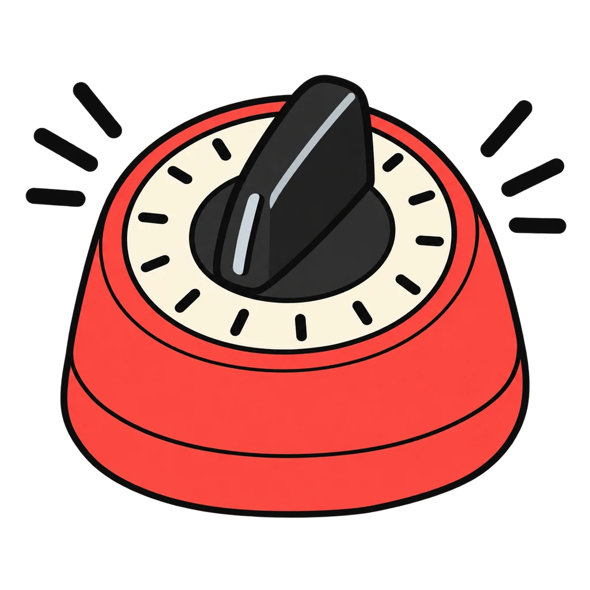

This game reviews the routines from Lesson 0.2, How This Room Works and Lesson 1.2, Handwashing, the Danger Zone, and Cross Contamination, in the exact words the class hears all year: the six-step sanitation routine (taught for the exam in Lesson 1.4), the six handwashing steps, and the eight lab roles from Handout 1.8 in the order they turn on. Round 4, Whose job is it, asks who does what at a station. Use it as the do now on any lab day, or on the board with the class calling out the next card. Nothing is saved when the page closes.

Station Rush
The cards are shuffled. Tap them into the right order before the clock runs out. Three order rounds, then a lightning round: whose job is it?
How to play
Each card you place in the right spot is 10 points. Three right in a row adds a 5 point bonus. A wrong tap costs 2 seconds and resets your streak. When the clock runs out, the round ends and the right order shows. Round 4 is lightning: eight seconds a question.